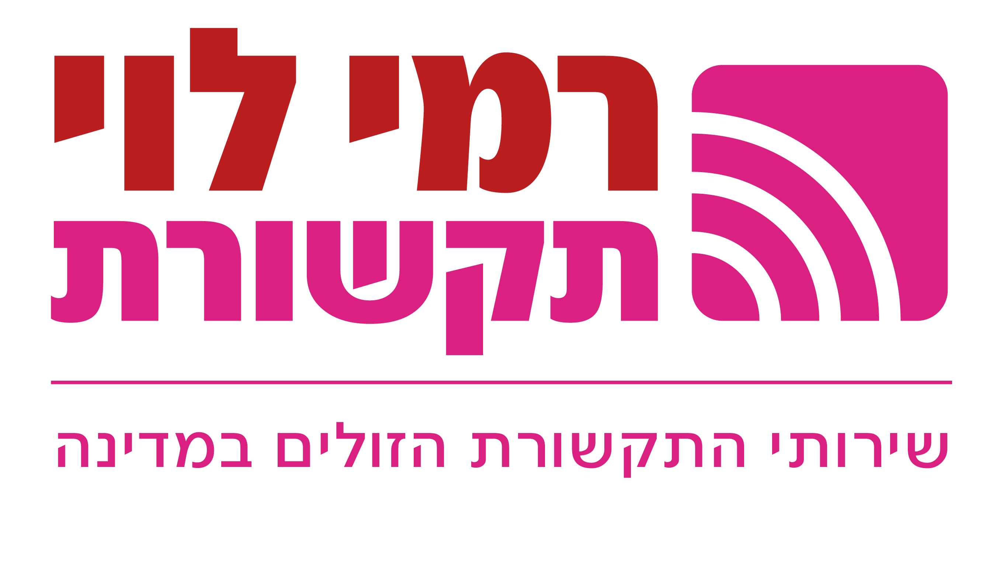

העוזר החכם
זמין לעזרה

היי! 👋 אני העוזר החכם של מרכז המדריכים.
אני יכול לעזור לך:
✓ למצוא מדריכים רלוונטיים
✓ להבין תהליכים ונהלים
✓ לפתור שגיאות ובעיות
✓ לענות על שאלות כלליות
פשוט שאל אותי כל שאלה, לדוגמה:
"איך עושים ניוד?" או "מה זה שגיאה 500?"
ניוד
הפעלת סים
שגיאות
חו\"ל